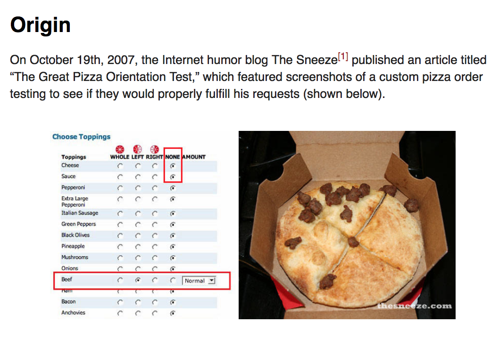

"Homemade None Pizza Left Beef"

A pizza with no toppings nor sauces other than beef on the left side
This recipe was used only for comedic purposes and demonstrating my skills in creating a website, rather than to promote an actual recipe. Thank you.
Ingredients:
- Ready to bake, Store Bought Dough
- No cheese
- No pepperoni
- No sauce
- Only Beef (enough to cover half the pizza)
Steps:
- Ready the dough and spread onto a lined tray
- Sprinkle the beef across the pizza (only the left side*)
- Contemplate why you're reading this.
- Follow instructions on packaging for the dough to bake.
- Done!